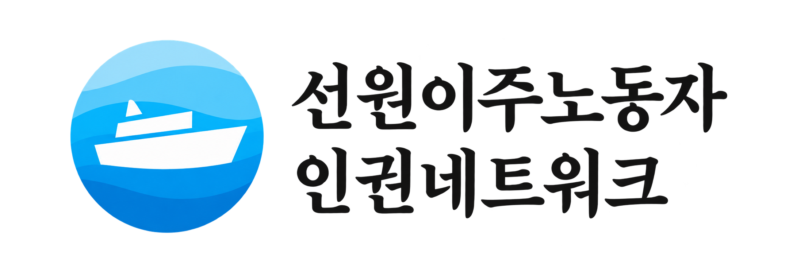

---
---
<!DOCTYPE html>
<html lang="ko">
<head>
    <meta charset="UTF-8">
    <meta name="viewport" content="width=device-width, initial-scale=1.0">
    <title>성명 및 보도자료 - 선원이주노동자인권네트워크</title>
    <!-- 디자인 파일 연결 -->
    <link rel="stylesheet" href="style.css">
    <link href="https://fonts.googleapis.com/css2?family=Noto+Sans+KR:wght@300;400;500;700&display=swap" rel="stylesheet">
</head>
<body>

    <!-- 상단 로고 및 메뉴바 -->
    <header class="navbar">
        <div class="logo" style="display: flex; align-items: center; max-height: 60px;"> <!-- 상자 높이 60px로 여유있게 -->
            <a href="index.html" style="display: block;">
                 <!-- 로고 높이 50px로 확대 -->
            </a>
        </div>
        
        <nav class="menu">
            <ul>
                <li><a href="index.html">소개</a></li>
                <li><a href="activities.html">활동자료</a></li>
                <li><a href="statements.html">성명/보도</a></li>
            </ul>
        </nav>

        <div style="display: flex; align-items: center; gap: 10px;">
            <div class="search-box">
                <input type="text" placeholder="검색">
                <button type="button">
                    <svg width="18" height="18" viewBox="0 0 24 24" fill="none" stroke="#555" stroke-width="2" stroke-linecap="round" stroke-linejoin="round">
                        <circle cx="11" cy="11" r="8"></circle>
                        <line x1="21" y1="21" x2="16.65" y2="16.65"></line>
                    </svg>
                </button>
            </div>
            <div class="lang-select">
                <select onchange="location = this.value;">
                    <option value="statements.html">🇰🇷 한국어</option>
                    <option value="en_index.html">🇺🇸 English</option>
                    <option value="id_index.html">🇮🇩 Bahasa Indonesia</option>
                    <option value="vi_index.html">🇻🇳 Tiếng Việt</option>
                </select>
            </div>
        </div>
    </header>

    <!-- 서브페이지 상단 배너 -->
    <section class="sub-hero">
        <div class="container">
            <h2>성명 및 보도자료</h2>
            <p>선원이주노동자 인권 현안에 대한 네트워크의 공식 입장과 언론 보도자료를 전해드립니다.</p>
        </div>
    </section>

    <!-- 게시판 구역 (자동 블로그 글 불러오기 적용) -->
    <section class="board-section container">
        <ul class="board-list">
            <!-- 관리자 페이지에서 statements로 작성한 글만 반복해서 자동으로 가져옵니다 -->
            {% for post in site.categories.statements %}
            <li>
                <a href="{{ site.baseurl }}{{ post.url }}">
                    <!-- 코발트 블루 색상 -->
                    <span class="badge" style="background-color: #1E3A8A; display: inline-block;">{{ post.badge }}</span>
                    <span class="board-title">{{ post.title }}</span>
                    <span class="board-date">{{ post.date | date: "%Y.%m.%d" }}</span>
                </a>
            </li>
            {% endfor %}
        </ul>

        <!-- 페이지 넘기기 (디자인 용) -->
        <div class="pagination">
            <a href="#" class="active">1</a>
            <a href="#">2</a>
            <a href="#">3</a>
        </div>
    </section>

    <!-- 하단 푸터 -->
    <footer>
        <div class="container flex-between footer-content">
            <div class="footer-info">
                <strong>선원이주노동자인권네트워크</strong>
                <p>주소: 서울특별시 OOO OOO OOOO<br>
                전화: 02-123-4567 | 이메일: info@seafarers-rights.org</p>
            </div>
            <div class="footer-copyright">
                <p>© 2026 선원이주노동자인권네트워크. All rights reserved.</p>
            </div>
        </div>
    </footer>

</body>
</html>
